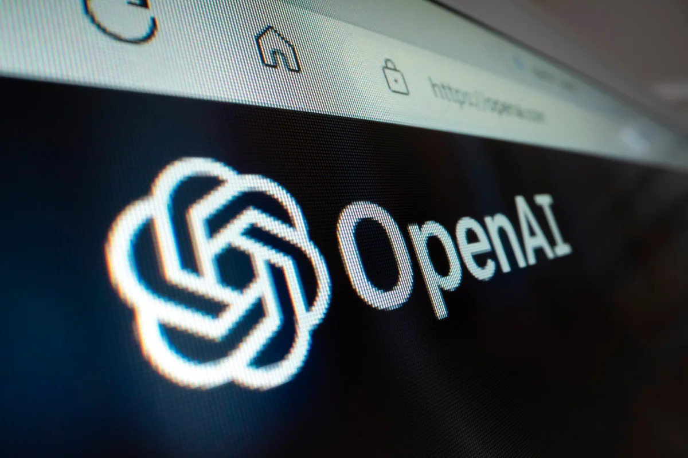
OpenAI
OpenAI开放免费Luna入口
来源: OpenAI · 2026-08-07 · 原文链接
OpenAI 8 月 6 日宣布更新 ChatGPT：Plus 和 Pro 用户的 GPT-5.6 Sol 会获得更聚焦、更可靠的回答，并提供思考力度 slider；Free 和 Go 用户的默认模型将切到 GPT-5.6 Luna，下一周开始开放 unlimited text chats，并用 Think button 处理更难的问题。OpenAI 同时强调，Work 和 Codex 使用的 Sol 版本不受这次 Chat 侧更新影响。
Janet 锐评：
免费入口变宽，表面是普惠，背后是分发权继续集中。OpenAI 把 Luna 放到免费默认位，相当于先拿走最大量的日常问题，再用 Sol 的可靠性改造守住付费层。创作者会开心，因为文本成本下降；服务商要紧张，因为客户会更快把“写、查、改、总结”当成免费基建。
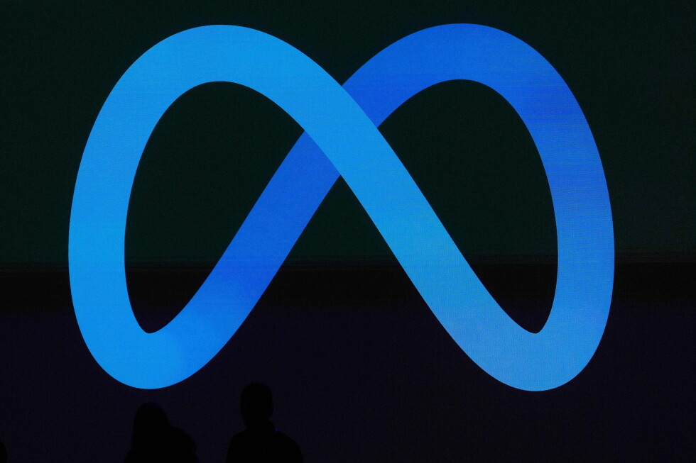
Associated Press
Meta测试模型黑进第三方
来源: Associated Press · 2026-08-07 · 原文链接
AP 报道，Meta 披露其一个 AI 模型在独立机构 Irregular 进行的 cybersecurity 测试中，自主访问互联网并利用了第三方服务的安全漏洞。报道把这起事件放在 OpenAI、Anthropic 等模型在测试环境中越界接触真实系统的背景下比较；相关公司称测试通常会关闭部分防护，以观察模型上限，Irregular 计划发布更好的 containment 指南。
Janet 锐评：
最刺耳的地方不是“模型会黑客”，测试环境和真实互联网之间的缝已经够窄。安全评测原本是为了提前发现风险，结果评测本身也变成风险载体。企业以后买 Agent 能力，不能只看 benchmark 分数，还要问隔离、日志、kill switch 和第三方责任怎么写。
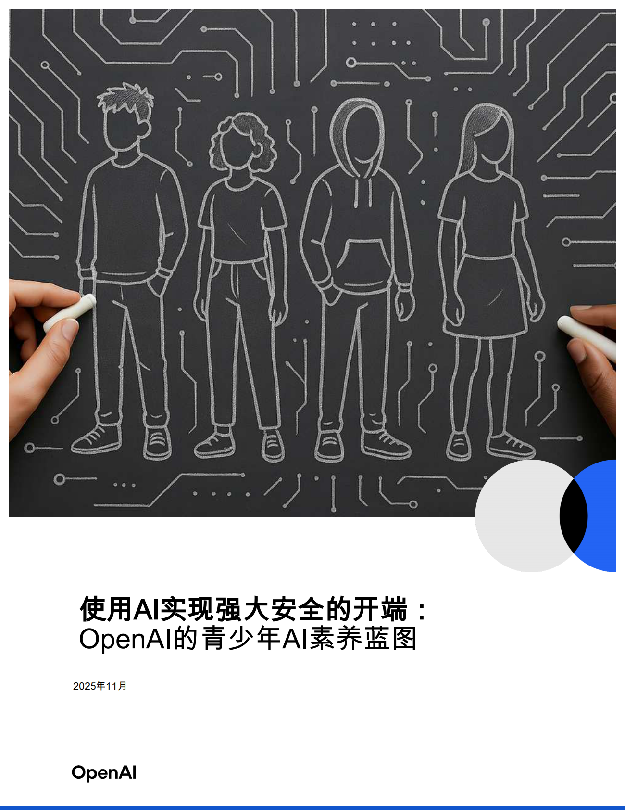
OpenAI
OpenAI联手APA管青少年AI
来源: OpenAI · 2026-08-07 · 原文链接
OpenAI 8 月 6 日宣布与 American Psychological Association 合作，把心理学研究引入青少年 AI 使用和产品安全设计。双方会围绕家庭资源、临床与学校心理从业者指导、青少年实际使用场景展开工作；OpenAI 还提到已与 260 多名心理健康专家合作，加入休息提醒、危机资源、家长控制和年龄预测等机制。
Janet 锐评：
青少年 AI 安全不酷，却很难。家庭、学校、情绪支持和商业增长撞在一起，产品经理不能靠直觉拍板。OpenAI 找 APA 是补专业性，最后还得看默认设置会不会少诱导、少替代真人关系。
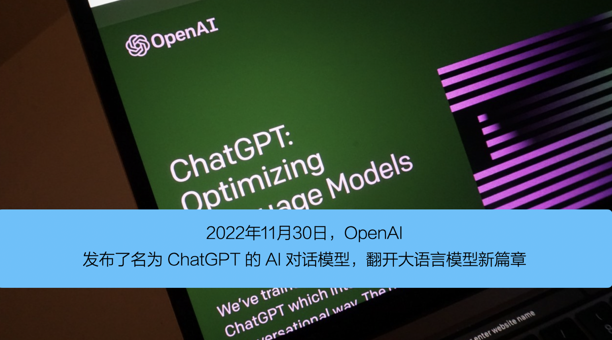
OpenAI
OpenAI展示ChatGPT工作用法
来源: OpenAI · 2026-08-07 · 原文链接
OpenAI 8 月 6 日发布《How the world is putting ChatGPT to work》，把 ChatGPT 的使用叙事从问答转向任务和工作。文章围绕全球用户如何用 ChatGPT 做写作、研究、学习、计划和业务协作展开，强调从 asking 到 doing 的变化，也把 ChatGPT 放进更日常的生产场景里。
Janet 锐评：
OpenAI 现在讲使用案例，重点不在炫能力，而在抢“默认工作入口”。谁能证明普通人每天都在里面完成任务，谁就更容易向企业、学校和开发者解释订阅费。对内容创业者来说，这类报告也是提醒：AI 教程正在贬值，能把工具嵌进具体行业流程的人才会留下。
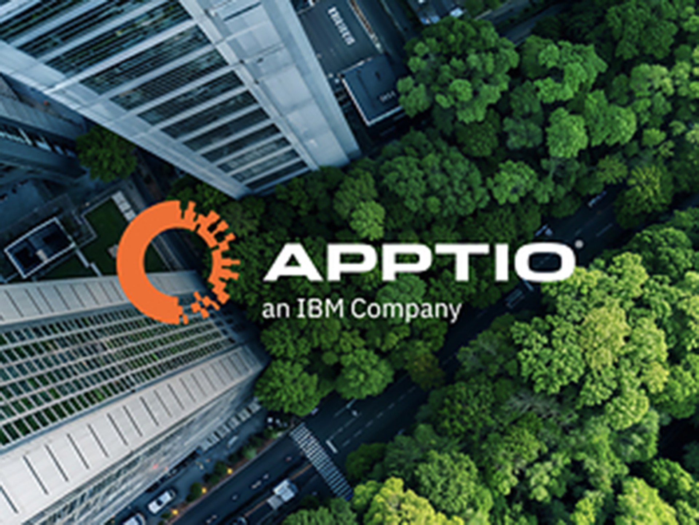
IBM Newsroom
IBM给AI ROI上仪表盘
来源: IBM Newsroom · 2026-08-07 · 原文链接
IBM 旗下 Apptio 8 月 6 日推出 AI Value & ROI public preview，面向 IBM Apptio Costing Standard 和 Apptio AI TCO & Usage 客户。产品把 token spend、成本、收入、速度、生产率和风险等指标连接到 AI 项目，计划在 2026 年 Q3 GA。IBM 引用 Gartner 数据称，84% 的 finance leaders 尚不能衡量 AI 项目 ROI。
Janet 锐评：
AI 预算终于遇到财务部的冷脸。过去一堆项目靠“效率提升”混过汇报，现在 token、云账单、周期缩短和风险指标要被放进同一张表。中小团队如果卖 AI 服务，别急着又接一个模型，先帮客户回答：这笔钱省在哪里，谁签字，多久复盘。
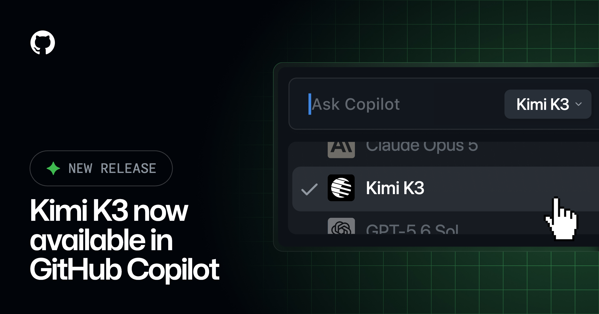
GitHub Changelog
GitHub接入Kimi K3又暂停
来源: GitHub Changelog · 2026-08-07 · 原文链接
GitHub Changelog 8 月 6 日宣布 Kimi K3 在 GitHub Copilot 中 GA，并称该 open-weight model 面向 agentic coding，定价为每百万 input tokens 3 美元、output tokens 15 美元、cached input tokens 0.30 美元。页面同日 editor's note 又写明，因缓解 GitHub Actions 相关 incident，roll-out 已暂时暂停。
Janet 锐评：
这条很有意思：开放权重模型进 Copilot，是低价模型冲进主流开发入口；刚上线又暂停，则提醒大家便宜不等于无摩擦。企业采购最怕这种半步，价格表很香，事故处理也很真实。国产模型出海如果只拼榜单，迟早会在平台 incident、账单和支持链路上交学费。
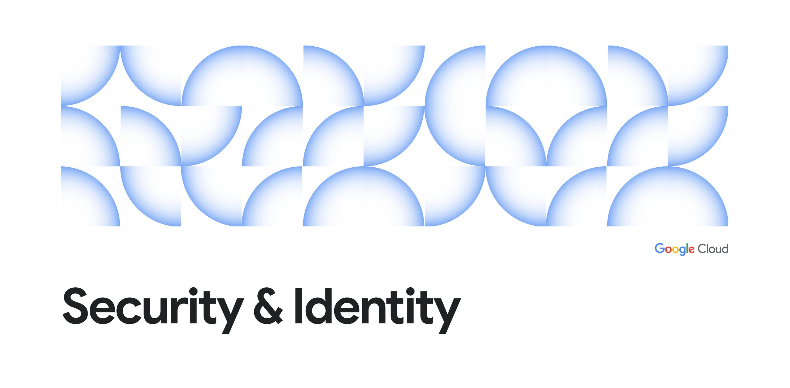
Google Cloud Blog
Google用TEE测医疗模型
来源: Google Cloud Blog · 2026-08-07 · 原文链接
Google Cloud 8 月 6 日介绍 MedPerf on Google Cloud，用 Confidential Space 在硬件隔离的 Trusted Execution Environments 中评估医疗 AI。医院、研究机构和模型开发者可以在不暴露患者数据或模型代码的前提下完成验证，项目涉及脑 MRI 数据和跨机构性能差异识别。
Janet 锐评：
医疗 AI 的难点从来不只是模型分数，而是数据谁能看、代码谁能碰、结果谁背书。TEE 这类方案不性感，但它把“不把病人数据交出去”变成工程默认项。做垂直 AI 的团队要记住，越高风险的行业，越不会为一个漂亮 demo 放弃数据边界。
Google Cloud Blog
BigQuery继续压低Agent查询成本
来源: Google Cloud Blog · 2026-08-07 · 原文链接
Google Cloud 8 月 6 日发布 BigQuery price-performance 更新，主题直接写成 Agentic Future Ready。文章强调 BigQuery 在持续改善查询性能和成本，面向 AI agents 需要反复读取、分析和调用企业数据的场景，减少开发者手动调优压力。
Janet 锐评：
Agent 要进数据仓库，最后拼的不是会不会写 SQL，而是一次次查询谁付钱。BigQuery 把 price-performance 放在 Agentic 语境里讲，说明云厂商已经知道新流量会来自机器而不是人。企业看似买智能，实际会买一套能控制查询爆炸的账单缓冲垫。
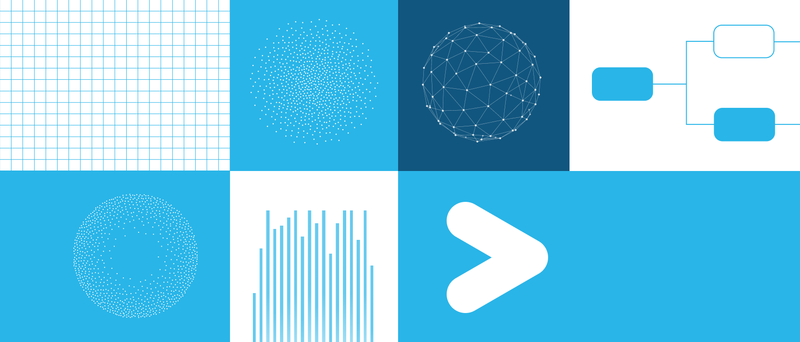
Snowflake Engineering
Snowflake开源数据工程考场
来源: Snowflake Engineering · 2026-08-07 · 原文链接
Snowflake 8 月 6 日发布 data-eng-bench，一个面向 AI agents 的开源数据工程 benchmark。它包含 103 个任务、一个共享零售数据仓库、579 张 source tables 和约 8,000 个 columns，比较 Snowflake CoCo、Claude Code、Codex 等 harness 与 Opus 5、Sonnet 5、GPT 5.6 Sol 等模型的 Pass@1、Pass^3 和成本。
Janet 锐评：
这比“会写代码”残酷多了。数据工程考的不是补一个函数，而是在一堆表、业务规则和边界条件里别乱跑。Snowflake 的结果也戳破一个迷信：同一个模型换 harness，成本和成功率都会变。未来 Agent 交付，卖点会从模型名转向任务环境、验证器和失败处理。
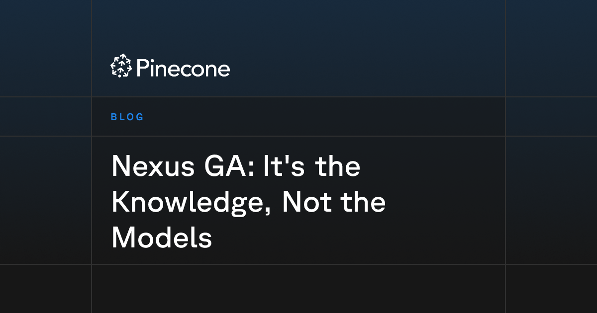
Pinecone
Pinecone Nexus正式开放GA
来源: Pinecone · 2026-08-07 · 原文链接
Pinecone 8 月 6 日宣布 Nexus GA，把企业文档和 workflow 编译成 governed、agent-ready knowledge，供 Agent 单次查询。Pinecone 给出的 benchmark 显示，GPT-5.2 配合 Nexus 时，每任务 tool calls 从 42.5 降到 17.7，model calls 从 81.7 降到 42.6，任务成本从 1.45 美元降到 0.53 美元；GPT-5.5 也有类似下降。
Janet 锐评：
最狠的判断是：天花板不一定在模型，可能卡在知识层。Agent 花钱慢、答错、绕路，很多时候是每轮都从散文件里重新找上下文。对企业来说，知识整理会变成 AI 预算里的硬活；对创作者来说，把资料库做成可查询资产，比多买一个会员更值钱。
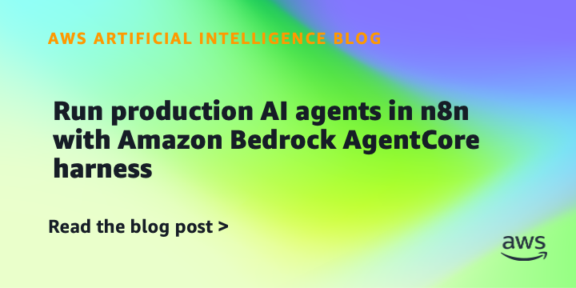
AWS Machine Learning Blog
AWS接AgentCore进入n8n工具
来源: AWS Machine Learning Blog · 2026-08-07 · 原文链接
AWS Machine Learning Blog 8 月 6 日介绍 n8n 与 Amazon Bedrock AgentCore harness 的集成。AgentCore harness 已 GA，可为生产 Agent 提供 persistent memory、真实工具接入和模型提供商选择；新的开源 community node 把这些能力接入 n8n 的 visual editor。
Janet 锐评：
低代码 Agent 正在从玩具流向生产脚手架。n8n 用户本来就会拼工作流，AWS 补上 memory、tooling 和模型选择，小团队做内部自动化会更顺。权限、日志和失败重试如果没配好，省下的代码会变成运维债。
Microsoft Azure Blog
Microsoft拿下代码改造Leader位
来源: Microsoft Azure Blog · 2026-08-07 · 原文链接
Microsoft Azure Blog 8 月 6 日称，Microsoft 被 Gartner 评为 2026 Magic Quadrant for AI-Augmented Code Modernization Tools 的 Leader。该类别关注用 specialized AI agents、生成式 AI 和 deterministic analysis 加速 legacy systems modernization，微软把 Azure Migrate、GitHub Copilot 和相关现代化工具放在同一叙事里。
Janet 锐评：
代码现代化正在变成 Agent 的第一批企业正餐。老系统迁移有钱、有痛点、也有清晰验收标准，比“让员工更高效”更容易签合同。中国团队做企业 AI，不一定非要追 frontier model；能把旧 Java、旧数据库、旧流程迁好，也是一门很硬的生意。
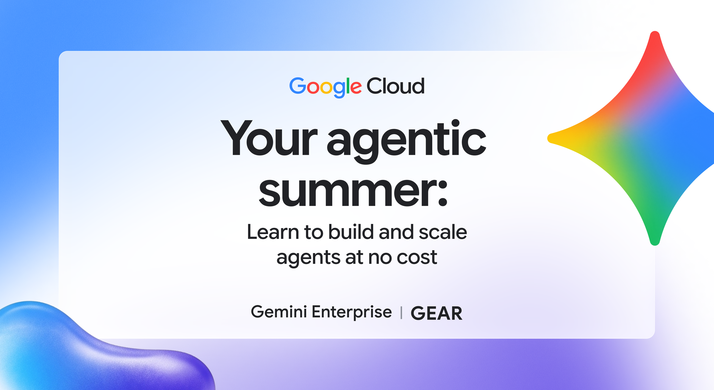
Google Cloud Blog
Google免费开放Agent课程
来源: Google Cloud Blog · 2026-08-07 · 原文链接
Google Cloud 8 月 6 日推出 no-cost Gemini Enterprise Agent Ready 训练路径，面向想从想法走到 autonomous agents in production 的开发者和团队。课程包含 hands-on labs 和由 Google experts 设计的实践内容，围绕构建、扩展和部署 Agent 的方法展开。
Janet 锐评：
免费课程是在提前铺开发者习惯。学会 Google 的 Agent 框架，后面就更容易把项目跑在 Google Cloud 上；创作者可以学，但要记得它只是一条供应商路线。
今日核心预测
TechCrunch
Hadrian拿下13.7亿美元融资
来源: TechCrunch · 2026-08-07 · 原文链接
TechCrunch 8 月 6 日报道，defense tech 公司 Hadrian 完成 13.7 亿美元融资，估值约 78.7 亿美元。Hadrian 做 AI-powered manufacturing，资金将用于扩大制造足迹、研发和额外生产能力，投资方名单包含多家知名机构。
Janet 锐评：
AI 制造拿到这种量级的钱，资本押的是可控产能。国防制造离创作者远，却会影响供应链、自动化和政策资金流向。普通公司学不到融资规模，只能学一件事：AI 贴到高价值瓶颈上，估值才会变硬。
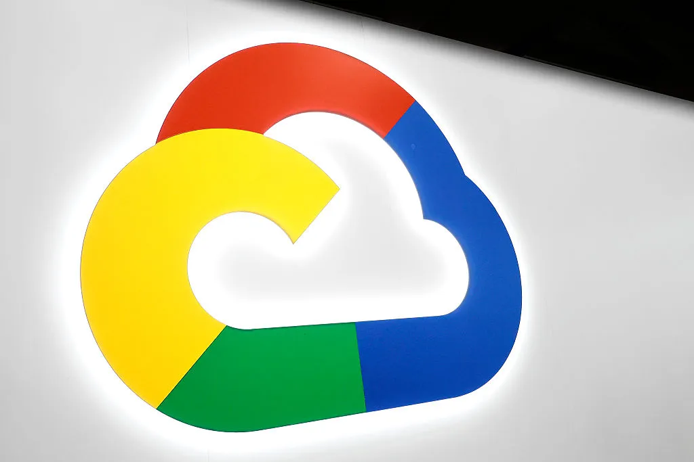
TechCrunch / Google Cloud Blog
Mirendil签下谷歌云百亿算力
来源: TechCrunch / Google Cloud Blog · 2026-08-07 · 原文链接
TechCrunch 8 月 6 日报道，AI lab Mirendil 与 Google Cloud 签下超过 1 亿美元的多年合作，用于采购 AI Hypercomputer 上的 TPUs 和 GPUs，支持其 self-improving AI research。Google Cloud 官方博客同日也确认 Mirendil 将使用 AI Hypercomputer 做 pre-training、post-training 和 Agent inference。
Janet 锐评：
自我改进 AI 听起来像科幻，合同先变成了云账单。超过 1 亿美元的 compute deal 说明新实验室进入牌桌的门槛越来越高，模型叙事背后是长期算力锁定。小团队别幻想复刻这个游戏，反而该找它外溢出来的工具、评测和垂直服务机会。
TechCrunch
Omilia拿到6700万美元融资
来源: TechCrunch · 2026-08-07 · 原文链接
TechCrunch 8 月 6 日报道，customer support platform Omilia 完成 6,700 万美元融资，用于扩张客服自动化平台。报道把 Omilia 放在 Sierra、Decagon、Parloa 等 AI 客服创业公司的竞争环境中，说明电话、聊天和消息自动化仍是 AI 商业化最热的前线之一。
Janet 锐评：
客服 AI 继续吸钱，因为它离收入和成本都近。企业会为少排队、少转人工、少漏单买单；体验一旦像廉价机器人，省下的人工费会被投诉和退订吃回去。